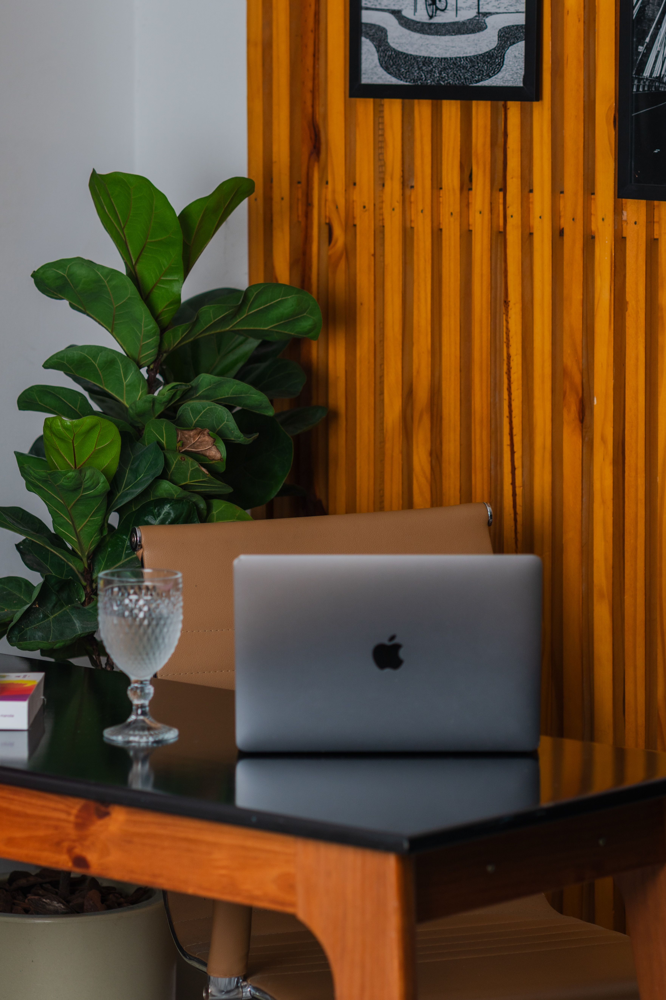

En este artículo
- Introducción
- Identifica el material antes de aplicar cualquier tratamiento
- Limpia los muebles sin dañar acabados y superficies
- Reduce la exposición continua al sol, lluvia y humedad
- Utiliza fundas y almacenamiento de forma correcta
- Establece un mantenimiento periódico según el material
- Preguntas frecuentes
- Conclusión
Introducción
Protege muebles de exterior frente a sol, lluvia, humedad y suciedad con limpieza, ubicación, fundas, mantenimiento y cuidados adaptados a cada material.
Antes de empezar, observa las condiciones reales de tu casa o jardín. Temperatura, humedad, exposición, materiales, tipo de planta y hábitos cotidianos cambian el resultado de cualquier recomendación general.
La mejor estrategia es trabajar por prioridades: primero seguridad y causas del problema, después mantenimiento y finalmente mejoras de comodidad o apariencia. Así evitas gastar tiempo y dinero en soluciones que solo esconden síntomas.
Esta guía está pensada para aplicar paso a paso. Cuando una tarea implique electricidad, estructura, trabajos en altura, daños importantes, productos peligrosos o una situación que no puedas evaluar con seguridad, recurre a un profesional cualificado.
Identifica el material antes de aplicar cualquier tratamiento
Antes de limpiar o aplicar un protector, identifica si el mueble es de madera, acero, aluminio, plástico, ratán sintético, fibras naturales o una combinación. Un producto adecuado para un material puede manchar o deteriorar otro.
Consulta etiquetas y manuales del fabricante. Algunos muebles de madera ya tienen un acabado específico y no necesitan aceite hasta que ese acabado muestre desgaste.
En metal, diferencia corrosión superficial de daño estructural. Una pequeña mancha puede tratarse con productos compatibles, pero una pata debilitada o soldadura dañada requiere reparación antes de seguir utilizando el mueble.
Los plásticos pueden degradarse con radiación ultravioleta y volverse quebradizos. No intentes recuperar una pieza estructural agrietada únicamente con pintura.
Las fibras naturales suelen ser más sensibles a exposición continua que las sintéticas. Comprueba si el producto está realmente diseñado para permanecer al exterior.
Los cojines tienen su propia composición. Tejido, relleno y cremalleras pueden requerir cuidados diferentes a la estructura del asiento.
Crear una pequeña ficha por conjunto con material y producto de mantenimiento evita aplicar tratamientos incompatibles en temporadas futuras.
Qué conviene revisar antes de actuar
Avanza de forma gradual y comprueba el resultado antes de añadir otra medida. Esta forma de trabajar permite distinguir qué cambio aporta una mejora real y evita intervenciones innecesarias, compras impulsivas o tareas que después resultan difíciles de mantener.
Limpia los muebles sin dañar acabados y superficies
Retira polvo, hojas y suciedad suelta antes de mojar. Un cepillo suave o aspiración apropiada evita convertir el polvo en barro durante el lavado.
Utiliza agua y jabón suave cuando el fabricante lo permita. Prueba cualquier producto nuevo en una zona poco visible antes de aplicarlo a toda la superficie.
No uses hidrolimpiadora sobre materiales delicados o acabados que puedan levantarse. La presión elevada puede introducir agua en juntas, erosionar madera o dañar fibras.

En madera, limpia siguiendo la dirección de la veta y evita dejar agua estancada. Seca con un paño y permite ventilación completa antes de aplicar aceite o protector.
En metal, presta atención a tornillos, uniones y zonas donde se acumula agua. La suciedad retenida puede mantener humedad sobre la superficie.
Lava fundas de cojines según su etiqueta. No vuelvas a colocarlas húmedas sobre el relleno o el mueble.
Una limpieza ligera frecuente suele ser más segura que esperar meses y necesitar productos agresivos. La prevención reduce esfuerzo y conserva mejor los acabados.
Cómo aplicar estas medidas de forma práctica
Avanza de forma gradual y comprueba el resultado antes de añadir otra medida. Esta forma de trabajar permite distinguir qué cambio aporta una mejora real y evita intervenciones innecesarias, compras impulsivas o tareas que después resultan difíciles de mantener.
Reduce la exposición continua al sol, lluvia y humedad
La sombra parcial puede prolongar la vida de muchos materiales al reducir radiación ultravioleta y temperatura superficial. Un porche, pérgola o sombrilla bien instalada puede proteger las horas de mayor exposición.
Las sombrillas deben cerrarse cuando haya viento fuerte y guardarse según las indicaciones del fabricante. No confíes en su base como protección ante tormentas.
Después de lluvia, elimina agua acumulada en asientos, mesas y pliegues de fundas. Inclina cojines para que sequen por ambos lados.
Evita colocar patas de madera permanentemente en zonas donde el agua se acumula. Mejorar drenaje del pavimento puede proteger más que aplicar repetidas capas de producto.
En zonas costeras, sal y humedad aceleran corrosión de algunos metales. Enjuagues suaves y mantenimiento más frecuente pueden ser necesarios.
Durante periodos de sol intenso, revisa plásticos y textiles por decoloración o fragilidad. El deterioro temprano es una señal para aumentar protección.
Si el clima incluye nieve o heladas prolongadas, considera almacenamiento cubierto para materiales sensibles. La estrategia debe adaptarse a la resistencia real del conjunto.
Señales que ayudan a tomar mejores decisiones
Avanza de forma gradual y comprueba el resultado antes de añadir otra medida. Esta forma de trabajar permite distinguir qué cambio aporta una mejora real y evita intervenciones innecesarias, compras impulsivas o tareas que después resultan difíciles de mantener.
Utiliza fundas y almacenamiento de forma correcta
Una funda debe tener el tamaño correcto y puntos de ajuste para que no vuele. Evita improvisar plásticos completamente cerrados que atrapen condensación.

Busca materiales resistentes al agua pero con posibilidad de ventilación. La humedad atrapada durante semanas puede favorecer moho y corrosión.
Antes de cubrir, limpia y seca el mueble. Cubrir suciedad húmeda crea un microambiente poco favorable para la conservación.
En periodos largos sin uso, guarda cojines en un lugar seco y ventilado. No los comprimas húmedos dentro de bolsas cerradas.
Si desmontas muebles, etiqueta tornillos y piezas y conserva el manual. No apiles estructuras de forma inestable para ahorrar espacio.
Un cobertizo o garaje debe estar razonablemente seco. Guardar muebles en un espacio con filtraciones no ofrece una protección real.
Revisa las fundas después de tormentas. Corrige bolsas de agua y comprueba que los puntos de sujeción no estén rozando o dañando el acabado.
Mantenimiento y seguridad
Avanza de forma gradual y comprueba el resultado antes de añadir otra medida. Esta forma de trabajar permite distinguir qué cambio aporta una mejora real y evita intervenciones innecesarias, compras impulsivas o tareas que después resultan difíciles de mantener.
Establece un mantenimiento periódico según el material
Crea dos revisiones principales al año: al inicio de la temporada de uso y antes de un periodo prolongado de almacenamiento. Limpia, aprieta fijaciones y busca daños.
En madera, renueva aceite o acabado solo cuando sea necesario y con un producto compatible. Lijar o aplicar capas indiscriminadamente puede cambiar el aspecto y reducir adherencia.
En metal pintado, repara pequeños desconchados antes de que la corrosión avance. Sigue instrucciones de preparación y secado del producto.
En plásticos, evita disolventes agresivos. Si el material se vuelve quebradizo, prioriza seguridad y sustituye la pieza cuando sea estructural.
Revisa patas, uniones y tornillos porque la estabilidad es más importante que la apariencia. Un asiento que se mueve no debe seguir utilizándose hasta corregir la causa.
Guarda los productos de mantenimiento correctamente cerrados y fuera del alcance de niños y mascotas. Respeta advertencias y fechas de conservación.
Un registro sencillo de cuándo limpiaste o trataste cada conjunto evita aplicar productos demasiado pronto y facilita mantener los muebles con menos esfuerzo.

Cómo convertirlo en una rutina sostenible
Avanza de forma gradual y comprueba el resultado antes de añadir otra medida. Esta forma de trabajar permite distinguir qué cambio aporta una mejora real y evita intervenciones innecesarias, compras impulsivas o tareas que después resultan difíciles de mantener.
Revisión final para mantener buenos resultados
Cuando termines las tareas principales, vuelve a observar el espacio después de varios días. El uso cotidiano, los cambios de clima y la respuesta de materiales o plantas muestran si la solución funciona de verdad.
Anota qué medida produjo una mejora clara y cuál resultó innecesaria. Este registro evita empezar desde cero la próxima temporada y permite invertir únicamente donde existe una necesidad comprobada.
Comprueba también seguridad, limpieza y accesibilidad. Herramientas, productos, cables, recipientes y piezas móviles deben quedar guardados de forma estable y fuera del alcance de niños o mascotas cuando corresponda.
No intentes perfeccionar todo en una sola jornada. Los sistemas que se mantienen durante meses suelen construirse con pequeños ajustes, revisiones periódicas y hábitos fáciles de repetir.
Si el problema original vuelve rápidamente, busca la causa antes de repetir el mismo tratamiento. Una fuga, un material deteriorado, un suelo inadecuado o un hábito de mantenimiento incorrecto necesita una solución específica.
Finalmente, conserva fotografías o notas. Comparar el estado actual con el de semanas anteriores ayuda a detectar tendencias y tomar decisiones basadas en resultados reales.
Plan de seguimiento durante las próximas semanas
Durante la primera semana, comprueba el resultado cada dos o tres días sin realizar cambios automáticos. Observa si las condiciones mejoran y registra cualquier señal nueva que pueda indicar una causa diferente.
En la segunda semana, ajusta únicamente aquello que haya demostrado ser poco práctico. Evita cambiar varias variables al mismo tiempo porque después será difícil saber qué medida produjo el resultado.
Al finalizar el primer mes, realiza una revisión más completa. Compara fotografías, notas, consumo de recursos o respuesta de las plantas según el tema y decide qué hábitos merece la pena mantener.
Si una solución requiere demasiado tiempo para sostenerse, simplifícala. Un método ligeramente menos perfecto pero fácil de repetir suele ofrecer mejores resultados a largo plazo que una rutina complicada que se abandona.
Guarda los materiales y herramientas relacionados en un lugar lógico y etiquetado. Tener todo preparado reduce fricción cuando llegue la siguiente revisión y evita comprar duplicados.
Esta evaluación periódica convierte una intervención puntual en un sistema de mantenimiento. Con el tiempo necesitarás menos correcciones porque detectarás los problemas antes de que se vuelvan grandes.
Preguntas frecuentes
¿Debo cubrir siempre los muebles de exterior?
Depende del material, clima y ubicación. Una funda transpirable y bien ajustada puede ayudar, pero no debe atrapar humedad durante largos periodos.
¿Puedo utilizar el mismo producto protector en madera y metal?
No. Cada material y acabado necesita productos compatibles; sigue las indicaciones del fabricante del mueble y del tratamiento.
¿Cómo evitar manchas de humedad bajo una funda?
Guarda el mueble limpio y seco, utiliza una funda adecuada y permite ventilación para reducir condensación.
¿Conviene guardar los cojines después de usarlos?
Cuando no están diseñados para exposición continua, guardarlos secos en un lugar protegido ayuda a conservar tejidos y rellenos.
¿Qué hago si aparece óxido o deterioro?
Actúa pronto y utiliza un método compatible con el material. Si el daño afecta a la estructura o estabilidad, deja de usar el mueble hasta repararlo.
Conclusión
Cómo proteger los muebles de exterior y prolongar su vida útil requiere sobre todo observación, planificación y constancia. Las mejores decisiones son aquellas que responden a las condiciones reales del espacio y pueden mantenerse sin crear trabajo innecesario.
Empieza por las medidas sencillas y seguras, evalúa su efecto y avanza únicamente cuando haga falta. Esta estrategia permite conseguir resultados más estables y aprovechar mejor tiempo, agua, energía y materiales.
Cuando exista un problema técnico, estructural o de seguridad que supere una tarea doméstica normal, solicita ayuda profesional. Resolver correctamente la causa suele ser más eficaz que repetir soluciones temporales.